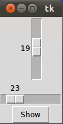
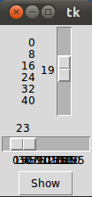
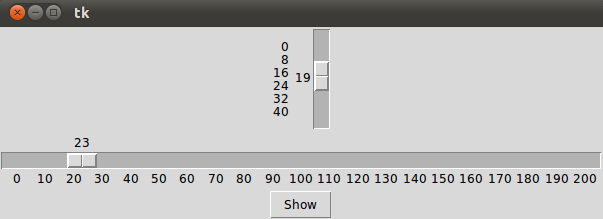

Sliders
Introduction
A slider is a Tkinter object with which a user can set a value by moving an indicator. Sliders can be vertically or horizontally arranged. A slider is created with the Scale method().Using the Scale widget creates a graphical object, which allows the user to select a numerical value by moving a knob along a scale of a range of values. The minimum and maximum values can be set as parameters, as well as the resolution. We can also determine if we want the slider vertically or horizontally positioned. A Scale widget is a good alternative to an Entry widget, if the user is supposed to put in a number from a finite range, i.e. a bounded numerical value.
A Simple Example
from Tkinter import * master = Tk() w = Scale(master, from_=0, to=42) w.pack() w = Scale(master, from_=0, to=200, orient=HORIZONTAL) w.pack() mainloop()If we start this script, we get a window with a vertical and a horizontal slider:

Accessing Slider Values
We have demonstrated in the previous example how to create sliders. But it's not enough to have a slider, we also need a method to query it's value. We can accomplish this with the get method. We extend the previous example with a Button to view the values. If this button is pushed, the values of both sliders is printed into the terminal from which we have started the script:
from Tkinter import *
def show_values():
print (w1.get(), w2.get())
master = Tk()
w1 = Scale(master, from_=0, to=42)
w1.pack()
w2 = Scale(master, from_=0, to=200, orient=HORIZONTAL)
w2.pack()
Button(master, text='Show', command=show_values).pack()
mainloop()
Initializing Sliders
A slider starts with the minimum value, which is 0 in our examples. There is a way to initialize Sliders with the set(value) method:
from Tkinter import *
def show_values():
print (w1.get(), w2.get())
master = Tk()
w1 = Scale(master, from_=0, to=42)
w1.set(19)
w1.pack()
w2 = Scale(master, from_=0, to=200, orient=HORIZONTAL)
w2.set(23)
w2.pack()
Button(master, text='Show', command=show_values).pack()
mainloop()
The previous script creates the following window, if it is called:

tickinterval and length
If the option tickinterval is set to a number, the ticks of the scale will be displayed as multiples of that value. We add a tickinterval to our previous example.
from Tkinter import *
def show_values():
print (w1.get(), w2.get())
master = Tk()
w1 = Scale(master, from_=0, to=42, tickinterval=8)
w1.set(19)
w1.pack()
w2 = Scale(master, from_=0, to=200,tickinterval=10, orient=HORIZONTAL)
w2.set(23)
w2.pack()
Button(master, text='Show', command=show_values).pack()
mainloop()
If we start this program, we recognize that the vertical slider has the values 0, 8, 16, 24, 32, 40 added to
its left side. The horizontal slider has also the numbers 0,10,20, 30, ..., but we can't see them, because the
get smeared on top of each other, because the slider is not long enough:

To solve this problem we have to increase the length of our horizontal slider. We set the option length. length defines the x dimension, if the scale is horizontal and the y dimension, if the scale is vertical. So we change the definition of w2 in the following way:
The result looks like this:
